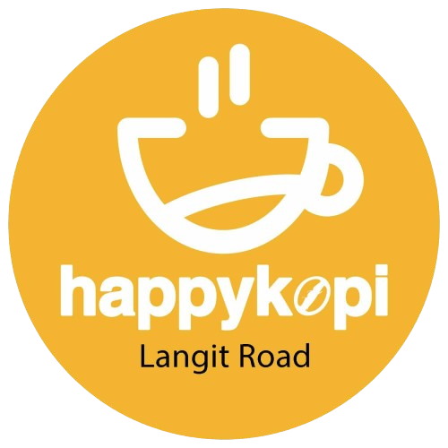

@if (isSidebarOpen$ | async) {
    <div class="backdrop" (click)="close()"></div>
}

<aside [class.open]="isSidebarOpen$ | async" class="w-[80vw] h-screen bg-hapikopi-bg pt-5 flex flex-col absolute">
    <div class="relative w-[100vw]">
        <div [class.open]="isSidebarOpen$ | async" class="toggle" (click)="close()">
            <svg xmlns="http://www.w3.org/2000/svg" width="48" height="48" viewBox="0 0 48 48">
                <path fill="none" stroke="#333333" stroke-linecap="round" stroke-linejoin="round" stroke-width="4"
                    d="M31 36L19 24l12-12" />
            </svg>
        </div>
    </div>
    <section class="px-5">
        <div class="flex items-center gap-2">
            
            <p class="font-bold text-xl text-hapikopi-dark">HappyKopi</p>
        </div>
        <h1 class="py-5 text-lg font-[700]">{{(currentUser | async)?.username}}</h1>
    </section>
    <hr>

    <section class="flex flex-col flex-1 py-5">
        @for (item of pages; track $index) {
            <app-sidebar-button [value]="item.page" [destination]="item.route"></app-sidebar-button>
        }
    </section>
    <hr>
    <section class="flex flex-col gap-3 px-5 py-4">
        <button class="flex items-center gap-3">
            <svg xmlns="http://www.w3.org/2000/svg" class="w-8" viewBox="0 0 24 24">
                <path fill="#333333"
                    d="m9.25 22l-.4-3.2q-.325-.125-.612-.3t-.563-.375L4.7 19.375l-2.75-4.75l2.575-1.95Q4.5 12.5 4.5 12.338v-.675q0-.163.025-.338L1.95 9.375l2.75-4.75l2.975 1.25q.275-.2.575-.375t.6-.3l.4-3.2h5.5l.4 3.2q.325.125.613.3t.562.375l2.975-1.25l2.75 4.75l-2.575 1.95q.025.175.025.338v.674q0 .163-.05.338l2.575 1.95l-2.75 4.75l-2.95-1.25q-.275.2-.575.375t-.6.3l-.4 3.2zm2.8-6.5q1.45 0 2.475-1.025T15.55 12t-1.025-2.475T12.05 8.5q-1.475 0-2.488 1.025T8.55 12t1.013 2.475T12.05 15.5" />
            </svg>
            <p class="font-[400]">Settings</p>
        </button>
        <button class="flex items-center gap-3" (click)="logout()">
            <svg xmlns="http://www.w3.org/2000/svg" class="w-8" viewBox="0 0 24 24">
                <path fill="#333333"
                    d="M12.232 3.25H9.768c-.813 0-1.469 0-2 .043c-.546.045-1.026.14-1.47.366a3.75 3.75 0 0 0-1.64 1.639c-.226.444-.32.924-.365 1.47c-.043.531-.043 1.187-.043 2v6.464c0 .813 0 1.469.043 2c.045.546.14 1.026.366 1.47a3.75 3.75 0 0 0 1.639 1.64c.444.226.924.32 1.47.365c.531.043 1.187.043 2 .043h2.464c.813 0 1.469 0 2-.043c.546-.045 1.026-.14 1.47-.366a3.75 3.75 0 0 0 1.64-1.639c.226-.444.32-.924.365-1.47c.043-.531.043-1.187.043-2V15a.75.75 0 0 0-1.5 0v.2c0 .852 0 1.447-.038 1.91c-.038.453-.107.714-.207.912c-.216.423-.56.767-.983.983c-.198.1-.459.17-.913.207c-.462.037-1.056.038-1.909.038H9.8c-.852 0-1.447 0-1.91-.038c-.453-.038-.714-.107-.911-.207a2.25 2.25 0 0 1-.984-.983c-.1-.198-.17-.459-.207-.913c-.037-.462-.038-1.057-.038-1.909V8.8c0-.852 0-1.447.038-1.91c.037-.453.107-.714.207-.911a2.25 2.25 0 0 1 .984-.984c.197-.1.458-.17.912-.207c.462-.037 1.057-.038 1.909-.038h2.4c.853 0 1.447 0 1.91.038c.453.037.714.107.912.207c.423.216.767.56.983.984c.1.197.17.458.207.912c.037.462.038 1.057.038 1.909V9a.75.75 0 0 0 1.5 0v-.232c0-.813 0-1.469-.043-2c-.045-.546-.14-1.026-.366-1.47a3.75 3.75 0 0 0-1.639-1.64c-.444-.226-.924-.32-1.47-.365c-.531-.043-1.187-.043-2-.043" />
                <path fill="#333333"
                    d="M12.47 8.47a.75.75 0 1 1 1.06 1.06l-1.72 1.72H20a.75.75 0 0 1 0 1.5h-8.19l1.72 1.72a.75.75 0 1 1-1.06 1.06l-3-3a.75.75 0 0 1 0-1.06z" />
            </svg>
            <p class="font-[400]">Sign Out</p>
        </button>
    </section>
</aside>